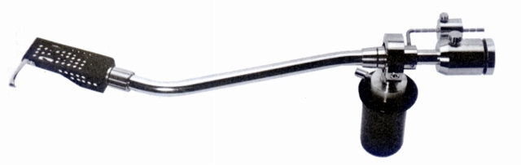

ES-701

■価格 7,000円■型式 スタティックバランス型■全長 323�o■実行長 225�o■オーバー・ハング 13�o■針圧範囲 0〜4.0g■アーム高さ 33〜80�o■アームベース穴■アンチスケートディバイス なし■アームリフター なし ■ラテラルバランサー あり■カートリッジ自重 4〜15g■線間容量 ■発売 〜1973年■販売終了 1974年頃■備考 価格は1973年頃のもの
エクセルのインデックスへ